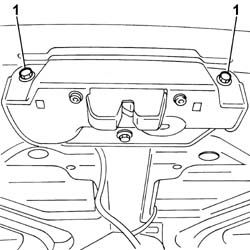
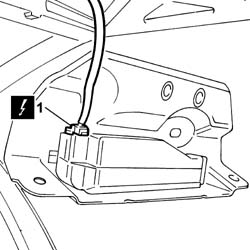
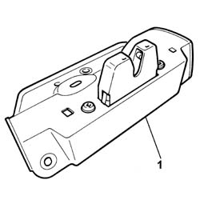
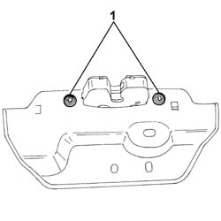
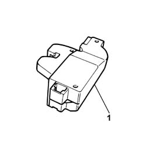

7015B10 SINGLE TAILGATE LOCK - R+R OR REPAIR WITH PANEL/PROTECTION REMOVED
- Path
- Procedures > 70 FITTINGS > 7015 TAILGATE/FLAP > 7015B TAILGATE LOCKING/OPENING DEVICES > 7015B10 SINGLE TAILGATE LOCK - R+R OR REPAIR WITH PANEL/PROTECTION REMOVED
- Kind
- repair procedure (removal / refitting; the operation number is the code)
- Applies to
- all engines; all production periods
- Interactive page
- https://sloeber94.github.io/elrnDB-fUlss/en/#/179007694
Applies to: all engines; all production periods
 Removing
Removing
 Refitting
RefittingOp. 5530B56 BATTERY DRIP TRAY COVER - R.R.
- Disconnect the negative battery terminal.
1. Undo the bolts fixing the lock to the tailgate

Applies to: all engines; all production periods
1. Disconnect the electrical connection from the lock.

Applies to: all engines; all production periods
1. Remove the lock complete with support.

Applies to: all engines; all production periods
1. At the bench, undo the bolts fixing the lock to the support.

Applies to: all engines; all production periods
- Release the lock from the fastening clips.
1. Remove the lock

Applies to: all engines; all production periods
Refitting
Removing- Fit the lock.
- Attach the tailgate lock to the fastening clips.
- Tighten the bolts fixing the lock to the support to torque.
- Connect the electrical connection for the lock.
- Tighten the bolts fixing the lock to the tailgate to torque.
- Connect the negative battery terminal.